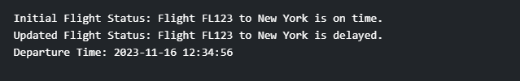

Write a Java program to create a class called "Airplane" with a flight number, destination, and departure time attributes, and methods to check flight status and delay.
Code:-
import java.text.SimpleDateFormat;
public class AirplaneExample {
public static void main(String[] args) {
// Create an instance of the Airplane class
Airplane myFlight = new Airplane("FL123", "New York", new Date());
// Display initial flight status
System.out.println("Initial Flight Status: " + myFlight.checkFlightStatus());
// Simulate a delay in the flight
myFlight.delayFlight();
// Display updated flight status after delay
System.out.println("Updated Flight Status: " + myFlight.checkFlightStatus());
// Display the departure time
SimpleDateFormat dateFormat = new SimpleDateFormat("yyyy-MM-dd HH:mm:ss");
System.out.println("Departure Time: " + dateFormat.format(myFlight.getDepartureTime()));
}
}
Output:-
